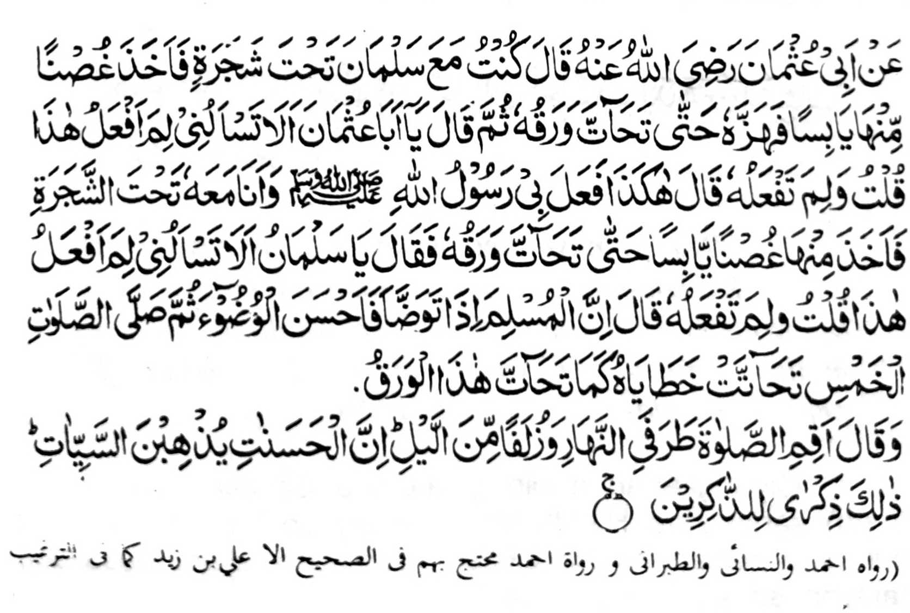
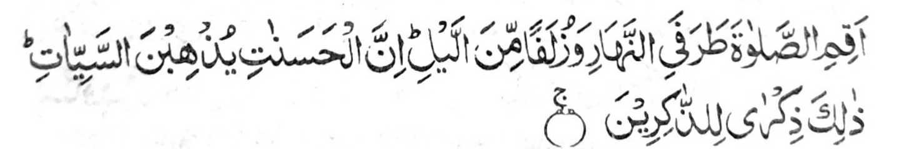
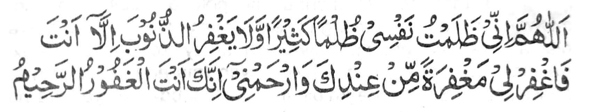

Miyaka po-on ko Abu Uthman (Radhiallaho 'Anho) a pitharo iyan, "Miyaka isa na ped aken so SaIman (Radhiallaho ’Anho) ko atag o kayo. Kiyapetan niyan so miyalayon a sapak a kayo na kiyokhog iyan taman sa miyatatak so manga ra-on niyan. Pitharo iyan raken, 'Hay, Abu Uthman, bangka raken di pagiza-an o ino akena-i gi-ing gola-ola-a?' Pitharo aken, 'Inongka nan gi-ing gola-ola-a?" Pitharo iyan, 'Manden na-i a pinggola-ola raken o Rasulollah (Sallallaho 'alaihi wasallam) ko masa a ped aken seka niyan ko atag o kayo. Komiyapet sekaniyan sa gango a sapak na kiyokhog iyan taman sa so manga ra-on niyan na miyanga tatatak. Pitharo iyan raken, 'Hay, SaIman (Radhiallaho ’Anho), bangka raken di pagiza-an o ino akena-i gi-ing gola-ola-a?' Pitharo aken, "Inongka nan gi-ing gola-ola-a?" Pitharo iyan, 'Mata-an a so Muslim a magabedas phiya-piya na oriyan niyan na zambayangan niyan so lima a wakto, na so manga dosa niyan na phanga-tatatak sa lagido kapekha-tatatk angka iya manga ra-on. Na oriyan niyan na biyatiya iyan angka-iya Ayaat sa Qur’an:

"Na pamayandegen ka so Sambayang ko mbala ko kadaon-dao, go so saba-ad ko gagawi-i. Mata-an a so manga pipiya na khalalas iyan so manga rarata. Giyanan man I ‘endao ko pephamakinda-o". [Soorah Hud:114]
Giyangkanan a pinggola-ola o SaIman (Radhiallaho ’Anho) sangka-iya Hadith na miya-ilay so kala a babaya o manga Sahabah ko Rasulollah (Sallallaho 'alaihi wasallam). Lalayon so kapekhababaya iran ko kapethademi ko manga pipiya a miyanggola-ola iran ko masa a zisi-i kiran so Rasulollah (Sallallaho 'alaihi wasallam). Siran, na si-i ko kaphagaloya iran non, na soden so tanto a kiya-ilaya iran non sangkoto a masa na aya iran den pezowa-an.
Tanto a maregen o ba panothola so langon o manga Hadith o Rasulollah (Sallallaho 'alaihi wasallam) a piyagosay niyan so manga kalbihan o Sambayang a go so miya-aloy niyan so kakharila-i ko manga tao a somisiyapon. Lagid o mona a kiya-aloy niyan, a so manga Olama na tiyaman niran bo so rila ko manga Saghair (manga i-ito a dosa), ogaid na sangka-iya a Hadith na da niyan tago-i sa tamana. So 'Alim a ama aken na dowa a sabap a miyatharo iyan. Paganay ron na, di patot ko Muslim o ba maka sogok sa apiya antona-a Kabair (manga ala a dosa). Open o khasalak a aden a masogok iyan a dosa, na di sekaniyan khaparo (sabap ko kapapadalemon o kalek si-i ko Allah) taman sa di niyan malalas a lo' a kathaobat a inggora-ok iyan ko Allah, lkadowa, na so tao a zambayang sa Ikhlas ago piphiya-piya-an niyan na mararani a maka-phamangeni sa rila (Istighfar) sa tanto a madakel ko oman gawi-i. Ilayangka angka-iya kaposan a pangeni ko Sambayang.

"Ya Allah, sabenar a miyalalim aken so ginawa ko sa kalalim a tanto a mala go da-a merila ko dosa inonta Seka. Na rila-iya kongka sa rila pho-on Reka go kalimo-on akong Ka. Mata-an a Seka na mala-i gagao a Makalimo-on."
Giyangka iya a miya-aloy a Hadith, na miya aloy ron na so Abdas na pephiya-piya-an. Giyoto-i sabap sa khakenal tano so manga bitikan o kapagabdas na taros a inggolalan tano siran. Ibarat o Miswak. Sunnah ko Abdas, ogaid na lalayon inda-darainon. Miya-aloy sa Hadith a so manga Sambayang a ipamayandeg ko oriyan o kapemiswak na makalelebi sa pito polo ka pangkatan ko sambayang a da-on so kap-miswak. Si-i pen ko isa a Hadith, na so kap-miswak na tanto ron a inipami-is, na giyangka iya a kha-aloy a manga kalebihan na pantaga-i ko kap-miswak:
"Pekhasoti niyan ago mapephakamot iyan so ngari ago pekharen niyan so kado o sengaw."
Pekhasabapan sa babaya o Allah ago debak ko Shaitan".
"So Allah ago so manga Mala-ikat na pekhebabaya-an Niran so tao a gi-i miswak.“
"Pekhabager iyan so manga gos ago mapephaka-piya niyan so Kailay."
"Pekharen niyan so teba' a ayog ago so langog". Aya maporo-on na:
"Giya-i na Sunnah (Paparangayan) o pekhababaya-an tano a Rasulollah (Sallallaho 'alaihi wasallam)”.
Di maminos so manga pito polo a kalbihan o kap-miswak a miya aloy o manga Olama. Miya-aloy a so tao a aya olaola niyan na gi-i memiswak na amay ko phatay na so Kalimah na zisi-i ko manga modol iyan (ma-ana khisabot iyan so Kalimah). So manga kalbihan o kapagabdas phiya-piya na tanto a madakel. Miya aloy sa Hadith a so manga angga-ota a phera-oten a abdas na zigay ko Gawi-i a Kaphangokom, na sabap si-i a kakhakilala-a o Rasulollah (Sallallaho 'Alaihi Wasallam) ko manga Ummat iyan.